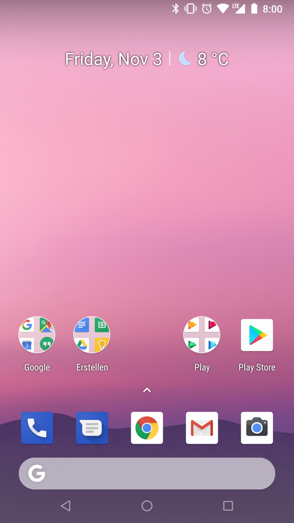

Apple

Windows

Android

Android
The Android OS is an operating system for mobile devices. It was developed by Google and primarily based off of the Linux OS. Though the original developers has no intention of creating an OS to compete with Apple's iOS, Android has become just that.
Google has developed many versions of the Android OS for cars, televisions, wearable devices and tablets as well. Each device with a UI designed for its individual needs. Versions of the Android OS have also been made for game systems, cameras, computers, and other electronics.